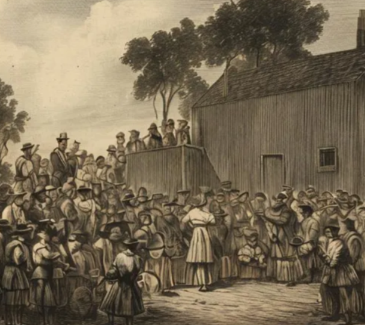

Auction theory

In a Dutch auction, an item is offered at a set maximum price, which is incrementally lowered until a bid is made. Whoever places the first bid wins the auction, provided the bid is above the auction’s reserve price.
The term “Dutch auction” stems from the auction style used in 17th century Holland’s tulip markets. The bulbs were wildly popular, and the marketplace for them had been chaotic. The exchange decided that the best way to sell the tulip bulbs was to do it quickly in as few bids as possible—while still getting the best price possible.
Rules of the game
Auctioneer starts with a high price and brings it down, the first person to raise hand wins and pays that price – Note: the process by construction reveals no information about the other bidders’ valuation – Decision: at what price (given valuation) should I raise my hand? • I have to make the decision without knowing anything about what the others might bid • I know I will pay the price at which I bid
• So: – the bidder who chooses the highest price wins the auction – the seller receives the highest price chosen by bidders – no other information is ever revealed
Dutch auctions enhance the democratization of IPOs, and increase price fairness and transparancy. Thus, allows small investors to take part in the offering and ensuring that the market arrives at a reasonable estimate of the firm’s value and that the initial “pop” that accompanies the listing of a hot company is muted.
However, there is less price control and more potential price volatility associated with Dutch auctions. Companies performing improper due-dilligence may bid which could skew the “fair-value” of the IPO which is derived from the auction. Furthermore, a stock’s price may crash immediately after listing when investors, who had bid a higher price earlier, realize that they may have miscalculated or overbid. Such investors may try to sell the stock to get out of their holding, leading to a crash in the share’s price.
Applications:
Initial Publoc Offerings (IPOs)
Investors enter their bids for the number of shares they want to buy at the price they want to buy them. Once all the bids are submitted, the allotted placement is assigned to the bidders from the highest bids down, until the alloted shares are assigned. The price that each bidder pays is based on the lowest price of all the allotted bidders (the last successful bid).
US Treasurie securities sale
To help finance the country’s debt the U.S. Treasury uses a Dutch auction to sell its securities.Prospective investors submit bids electronically through TreasuryDirect or the Treasury Automated Auction Processing System (TAAPS), which accepts bids up to 30 days in advance of an auction. The bids with the lowest yield will be accepted first, since the issuer will prefer to pay lower yields to its bond investors.
Optimal bid strategy
To gain certainty in the context of a Dutch auction, a winning bid must be placed earlier and at a higher price. Ample evidence suggests people prefer certainty over uncertainty in a variety of conditions (e.g. Kahneman and Tversky 1979, 2013)